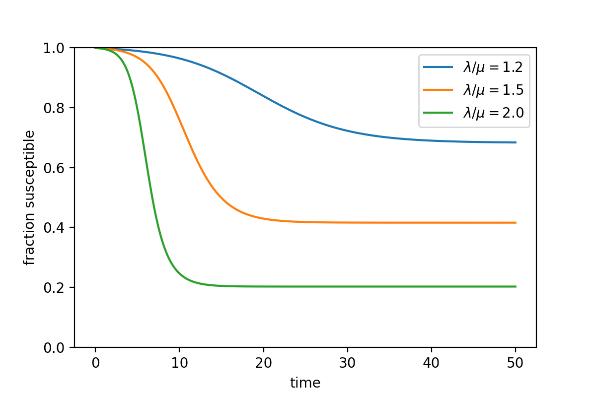
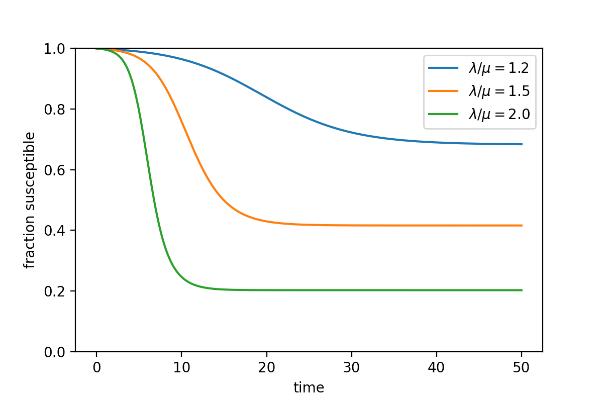
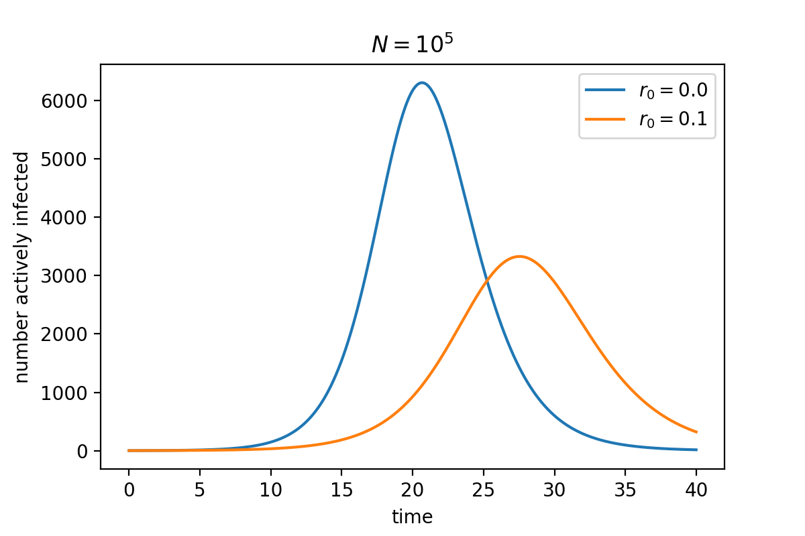
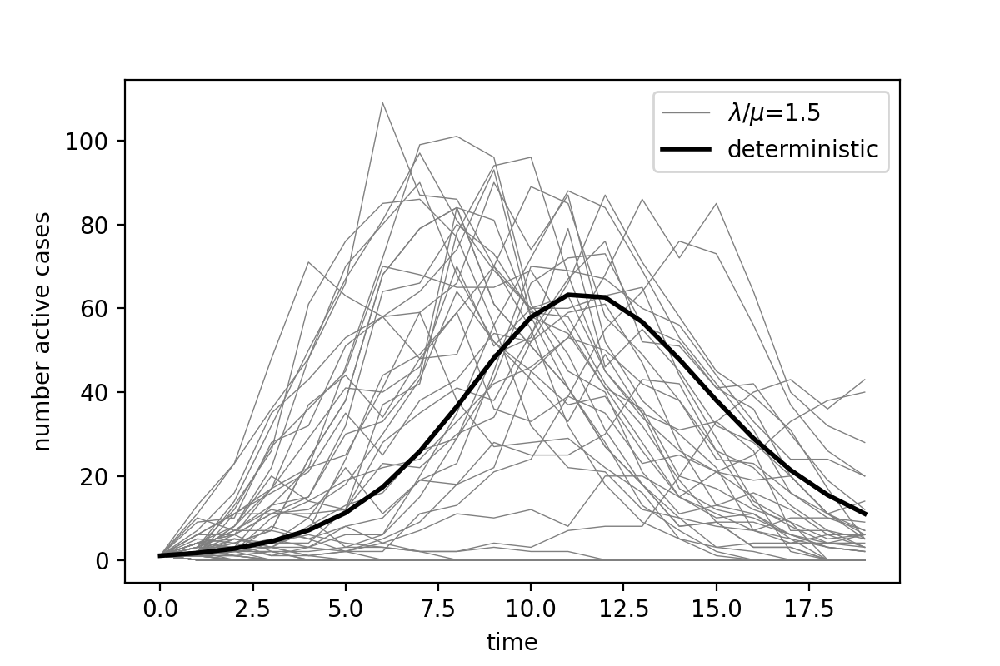

Modelling Disease Spread
Johannes Zierenberg
Max Planck Institute for Dynamics and Self-Organization, Göttingen, Germany
as part of
Current topics in theoretical physics
Max Planck Institute for Dynamics and Self-Organization, Göttingen, Germany
as part of
Current topics in theoretical physics

Outline
General introduction
Mathematical basics
Disease spread on networks
Non-Markovian disease spread
General introduction
#### What we will talk about
* Models need to simplify reality
* Simplification has to be suitable for scientific problem
#### References
* Kiss, Miller, and Simon, "Mathematics of Epidemics on Networks: From Exact to Approximate Models", (Springer International Publishing, Cham, 2017).
* Pastor-Satorras, Castellano, Van Mieghem, and Vespignani, Rev. Mod. Phys. (2015).
* additional sources of examples are referenced at bottom of slides
Why should we model disease spread?


 (Plague in island of Bombay 12/1905 - 07/1906)
(Plague in island of Bombay 12/1905 - 07/1906)


Dehning et al., Science (2020)
Li et al., Science (2020)
Maier & Brockmann, Science (2020)
Keeling et al., Nature (2003)
Brockmann & Helbig, Science (2013)
Kermack & McKendrick, Proc. R. Soc. Lond. A (1927)
How does a disease spread?
Example COVID-19

.gif)
Source: Wikimedia Commons (Smurrayinchester)
Cevik et al., BMJ (2020).
What are necessary ingredients to model disease spread?

Modelling disease spread requires simplifications
Simplify disease progression

Simplify progression with distinct states:
Simplify transitions between states:
- susceptible (S)
- exposed (E)
- infectious (I)
- recovered (R)
- hospitalized (H)
- dead (D)
- ...
Simplify transitions between states:
- which states are connected?
- what is the state-duration distribution?
- variability between individuals?
- variability over time?
Simplifications of disease progression are typically encoded in model name
Dehning et al., medrxiv (2020).
Cevik et al., BMJ (2020).
Modelling disease spread requires simplifications
Simplify spreading process

Approximate spatial aspects (who interacts with whom):
Simplify temporal aspects (interaction dynamics):
- agent based (freely moving)
- agent based (network from real data)
- agent based (general networks)
- locally well-mixed (network of compartments)
- globally well-mixed (compartments)
- ...
Simplify temporal aspects (interaction dynamics):
- explicitly model interactions for moving agents
- point-process model of interactions (inter-event distribution?)
Simplifications on spreading dynamics are typically difficult to assess quickly
Modelling disease spread requires simplifications
Disease progression
disease statestransition between states
Spreading process
spatial aspects(freely moving, network, well-mixed)
temporal aspects (interaction dynamics)
Simplifications need to balance realism and simplicity tailored to specific question under investigation
Modelling disease spread requires simplifications
Example: Compartmental SIR


Susceptible
Infected
Recovered
$\lambda$
spreading rate
$\mu$
recovery rate
Disease progression
SIR where I decays with rate $\mu$Spreading process
Well-mixed with uncorrelated contacts at rate $\lambda$ (Poisson process for each infected)
$\dot{S} = -\lambda\frac{S}{N} I$
$\dot{I} = +\lambda\frac{S}{N} I - \mu I$ $= \mu I\left(R_0\frac{S}{N}-1\right) $
$\dot{R} = +\mu I$
$\dot{I} = +\lambda\frac{S}{N} I - \mu I$ $= \mu I\left(R_0\frac{S}{N}-1\right) $
$\dot{R} = +\mu I$

 

The ratio $\lambda/\mu=R_0$ (basic reproduction number) determines the growth during initial phase of outbreak.
Here, $R_0=1$ is epidemic threshold.
The peak in case numbers arises from infected interacting at rate
$\lambda$ with random person (S, I, or R) of which only an S can
be infected.
The number of total infected depends on $R_0$, $S(0)$, and $R(0)$.
Kermack and McKendrick, Proc. R. Soc. Lond. A (1927).
Modelling disease spread requires simplifications
Example: Compartmental SIS
Susceptible
Infected
$\lambda$
$\mu$
Disease progression
Infected state decays with rate $\mu$Spreading process
Well-mixed with uncorrelated contacts at rate $\lambda$ (Poisson process for each infected)
$\dot{S} = -\lambda\frac{S}{N} I + \mu I$
$\dot{I} = +\lambda\frac{S}{N} I - \mu I$
$\dot{I} = +\lambda\frac{S}{N} I - \mu I$

The ratio $\lambda/\mu$ determines equilibrium between actively infected and susceptible.
Modelling disease spread requires simplifications
Examples of application
| Does initial infection cause outbreak? | (stochastic) network models |
|---|---|
| How does X influence outbreak? | SIR-X |
| How does X influence death numbers? | SIRD-X with age-specific parameters |


Maier & Brockmann, Science (2020)
Hufnagel, Brockmann, Geisel, PNAS (2004)
Modelling disease spread requires simplifications
Discussion
- Most naively, vaccination removes person from susceptible pool. How would this affect the spread? Can you qualitatively draw the number of actively infected over time in a partially vaccinated society?
-
Imagine you are a research team with the aim to find the most effective
vaccination protocol during an outbreak. What level of simplification
is suitable? Start by specifying
- What makes vaccination effective? Should it reduce deaths or should it reduce new infections? How does this affect your model?
- How localized is the disease? Is there only a few infected and can you know where? How does this affect your model?
- What do you know about disease transmission? Is it relevant that day-to-day human contacts often occur in clusters? How would this affect your model?
- Do you have data to parameterize the resulting model? If not, how meaningful is your study?
Modelling disease spread requires simplifications
Discussion
1.
Most naively, vaccination removes person from susceptible pool.
How would this affect the spread? Can you qualitatively draw
the number of actively infected over time in a partially
vaccinated society?

2. Imagine you are a research team with the aim to find the most effective
vaccination protocol during an outbreak. What level of simplification
is suitable?
- Level of simplification obviously depends on the precise question and there is no general answer possible. Be critical when reading papers.
- If interested in the general effect of vaccination: SIR + vaccinated compartment can be enough.
- If interested in spatial aspects (local outbreaks): Interaction network (!parameterized!) including point of origin and stochastic effects.
- If interested on individual basis (e.g. influential spreader): Full (dynamic) contact network but now the level of vaccination protection becomes relevant.
Level of detail should be consistent across model! If one incorporates
too many details of specific component, then one easily misses
relevant correlations.
$\to$ Simple models are powerful.
$\to$ Simple models are powerful.
Hufnagel, Brockmann, Geisel, PNAS (2004)
Maier & Brockmann, Science (2020)
General introduction
#### What have we learned?
* Models simplify reality on different levels (disease progression, spreading dynamics)
* Level of detail should be consistent (avoid making single component extremely realistic while keeping others utterly simple)
* Simplifications have to be well motivated and re-evaluated when drawing conclusions
Questions?
Preparation for next lecture:
Please read section II of
R. Pastor-Satorras, C. Castellano, P. Van Mieghem, and A. Vespignani, Epidemic Processes in Complex Networks, Rev. Mod. Phys. 87, 925 (2015).
Please read section II of
R. Pastor-Satorras, C. Castellano, P. Van Mieghem, and A. Vespignani, Epidemic Processes in Complex Networks, Rev. Mod. Phys. 87, 925 (2015).
Outline
General introduction
Mathematical basics
Disease spread on networks
Non-Markovian disease spread
Mathematical basics
#### What we will talk about
* Stochastic representation of disease spread
* How to derive deterministic representation from stochastic one
#### References
* Kiss, Miller, and Simon, "Mathematics of Epidemics on Networks: From Exact to Approximate Models", (Springer International Publishing, Cham, 2017).
* Pastor-Satorras, Castellano, Van Mieghem, and Vespignani, Rev. Mod. Phys. (2015).
* Gillespie, Stochastic Simulation of Chemical Kinetics, Annual Review of Physical Chemistry 58, 35 (2007).
* additional sources of examples are referenced at bottom of slides
Stochastic formulation
Disease progression
disease statestransition between states
Spreading process
spatial aspects(freely moving, network, well-mixed)
temporal aspects (interaction dynamics)
Disease progression
transition between disease states
(can be in principle assessed from clinical data, e.g., distribution of infectious period ($I\to X$))
Spreading process
temporal aspects (interaction dynamics)
($S\to I$ more complicated)
In the stochastic formulation, the system state becomes a random variable.
E.g., for the SIS model $S(t)$ and $I(t)=N-S(t)$ are random variables with states ${0,1.,...N}$.
The goal is usually to determine evolution equations for the probabilities of the observing a particular model configuration $x$, e.g. $x=(S,I)$, at a given time $t$.
E.g., for the SIS model $S(t)$ and $I(t)=N-S(t)$ are random variables with states ${0,1.,...N}$.
The goal is usually to determine evolution equations for the probabilities of the observing a particular model configuration $x$, e.g. $x=(S,I)$, at a given time $t$.
Stochastic formulation
Example SIS
Assumptions:
1) Infected individual recovers at rate $\mu$ independent of all others.
2) Infected individual contacts at rate $\lambda$ any other individual.
3) Both processes are Markovian, i.e., infection and recovery take place as events of a Poisson process.
1) Infected individual recovers at rate $\mu$ independent of all others.
2) Infected individual contacts at rate $\lambda$ any other individual.
3) Both processes are Markovian, i.e., infection and recovery take place as events of a Poisson process.
$I\to S$
$S+I\to I+I$
We can treat this a continuous-time Markov chain with system state $x(t) = [S,I](t)$ and the following possible transitions:
$[S,I] \to [S+1,I-1]\,$ with rate $\,\mu I\phantom{\frac{S}{N}}$
$[S,I] \to [S-1,I+1]\,$ with rate $\,\lambda I\frac{S}{N}$
How can we model this?
$[S,I] \to [S+1,I-1]\,$ with rate $\,\mu I\phantom{\frac{S}{N}}$
$[S,I] \to [S-1,I+1]\,$ with rate $\,\lambda I\frac{S}{N}$
How can we model this?
Kinetic Monte Carlo (Gillespie)
Setting: Evolution of system is determined by indep. Poisson processes (recovery, infection).
Goal: Generate one realization of this process.
Poisson process is a counting process $N(t)$ s.t.
1) $N(0)=0$
2) independent increments
3) number of events in any time interval $\Delta T$ is Poisson distributed ($Pois(a_i\Delta T)$)
Goal: Generate one realization of this process.
Poisson process is a counting process $N(t)$ s.t.
1) $N(0)=0$
2) independent increments
3) number of events in any time interval $\Delta T$ is Poisson distributed ($Pois(a_i\Delta T)$)
Poisson process 1:
Poisson process 2:
Poisson process 3:
Algorithm:
1. Create initial condition $x(t)=[x_1,...x_n]$ at $t=t_0$
2. Calculate rates $a(t)=[a_1, ..., a_n]$
3. Draw time $\Delta t$ until next event from exponential distribution with rate $\sum a_i$.
4. Draw random event weighted with current rates
5. Evolve time $t=t+\Delta t$ and realize event
6. In case $t < T\phantom{>}$ go back to 2.
1. Create initial condition $x(t)=[x_1,...x_n]$ at $t=t_0$
2. Calculate rates $a(t)=[a_1, ..., a_n]$
3. Draw time $\Delta t$ until next event from exponential distribution with rate $\sum a_i$.
4. Draw random event weighted with current rates
5. Evolve time $t=t+\Delta t$ and realize event
6. In case $t < T\phantom{>}$ go back to 2.
$x(t_0)=[S_0, I_0]$
$a(t)=\left[\mu I, \lambda \frac{S}{N}I\right]$
$\Delta t = \frac{1}{a_1+a_2}\ln\left(\frac{1}{r_1}\right)$
with random number $r_1\in[0,1)$
max $j$ s.t $\frac{1}{\sum_i a_i}\sum_{i=1}^{j-1} a_i \lt r_2\in[0,1)$
$j=1$: $I=I-1$, $S=S+1$
$j=2$: $I=I+1$, $S=S-1$
Stochastic formulation
Example SIS
Continuous-time Markov chain with system state $x(t) = [S,I](t)$ and the following possible transitions:
$[S,I] \to [S+1,I-1]\,$ with rate $\,\mu I\phantom{\frac{S}{N}}$
$[S,I] \to [S-1,I+1]\,$ with rate $\,\lambda I\frac{S}{N}$
$[S,I] \to [S-1,I+1]\,$ with rate $\,\lambda I\frac{S}{N}$
$\dot{S} = -\lambda\frac{S}{N} I + \mu I$
$\dot{I} = +\lambda\frac{S}{N} I - \mu I$
$\dot{I} = +\lambda\frac{S}{N} I - \mu I$
What do you believe will happen if we implement disease spread as a
continuous-time Markov Chain?
What will happen for $R_0=\frac{\lambda}{\mu}\gt 1$?
What will be special if we start from $I(0)=1$?
What will happen for $R_0=\frac{\lambda}{\mu}\gt 1$?
What will be special if we start from $I(0)=1$?
Stochastic formulation
Difference to discrete formulation
- Quantities of interest are now described not by single values but by distributions
- System may actually end up in a disease-free state that it cannot escape (absorbing state)
- $R_0\gt 1$ may end up in disease-free state
Stochastic formulation
$R_0\gt 1$ may end up in disease-free state
Assume that we start from a single infection [$I(0)=1$].
We can calculate the probability that this initial infection causes no further infection:
Infectious period is exponentially distributed (Poisson process):
$P(\Delta t, \mu) = \mu e^{-\mu\Delta t}$
Infection is Poisson process at rate $\lambda$, s.t. probability to not observe any event in $\Delta t$ is
$p(\text{no event}) = e^{-\lambda \Delta t}$
Probability no further infection:
$ p =\int_0^\infty d\Delta t\, e^{-\lambda \Delta t}\, \mu e^{-\mu\Delta t}$
$\phantom{p} =\frac{\mu}{\mu+\lambda}\int_0^\infty d\Delta t\,(\mu+\lambda) e^{-(\mu+\lambda) \Delta t}$ $\phantom{p} =\frac{\mu}{\mu+\lambda}$
We can calculate the probability that this initial infection causes no further infection:
Infectious period is exponentially distributed (Poisson process):
$P(\Delta t, \mu) = \mu e^{-\mu\Delta t}$
Infection is Poisson process at rate $\lambda$, s.t. probability to not observe any event in $\Delta t$ is
$p(\text{no event}) = e^{-\lambda \Delta t}$
Probability no further infection:
$ p =\int_0^\infty d\Delta t\, e^{-\lambda \Delta t}\, \mu e^{-\mu\Delta t}$
$\phantom{p} =\frac{\mu}{\mu+\lambda}\int_0^\infty d\Delta t\,(\mu+\lambda) e^{-(\mu+\lambda) \Delta t}$ $\phantom{p} =\frac{\mu}{\mu+\lambda}$
Only lower bound because stochastic fluctuations can also end up in disease state from higher number of infections
More general, we can approximate a disease in its initial phase by a birth-death process ($S\approx N$):
With the population $I$, birth at rate $\lambda_I=\lambda I$ and death at rate $\mu_I=\mu I$
The theory of birth-death processes tells us that the "population" goes extinct with certain probabilities:
for $\lambda\lt\mu$ with $\lim_{t\to\infty}p(\text{no epidemic})=1$
for $\lambda\gt\mu$ with $\lim_{t\to\infty}p(\text{no epidemic})=\left(\frac{\mu}{\lambda}\right)^{I(0)}$
With the population $I$, birth at rate $\lambda_I=\lambda I$ and death at rate $\mu_I=\mu I$
The theory of birth-death processes tells us that the "population" goes extinct with certain probabilities:
for $\lambda\lt\mu$ with $\lim_{t\to\infty}p(\text{no epidemic})=1$
for $\lambda\gt\mu$ with $\lim_{t\to\infty}p(\text{no epidemic})=\left(\frac{\mu}{\lambda}\right)^{I(0)}$
We measure that $67\%$ of trajectories are in the disease-free state for $\lambda/\mu=1.5$, i.e., p=2/3 starting from $I(0)=1$
Link between stochastic and deterministic formulation
Example SIS
$[S,I] \to [S+1,I-1]\,$ with rate $\,\mu I\phantom{\frac{S}{N}}$$=a_1(S,I)$ for $\nu_1=[+1,-1]$
$[S,I] \to [S-1,I+1]\,$ with rate $\,\lambda I\frac{S}{N}$$=a_2(S,I)$ for $\nu_2=[-1,+1]$
$[S,I] \to [S-1,I+1]\,$ with rate $\,\lambda I\frac{S}{N}$$=a_2(S,I)$ for $\nu_2=[-1,+1]$
By generating stochastic realizations of disease spread, we estimated the evolution of the probability distribution $P(x,t)$ to observe a particular state $x=[S,I]$
This problem be formally expressed by a master equation $$ \dot{P}(x,t) = \sum_{x^\prime} \left[\underbrace{a_{x^\prime \to x} P(x^\prime,t)}_{\text{gain}} - \underbrace{a_{x\to x^\prime} P(x,t)}_{\text{loss}}\right] $$
This problem be formally expressed by a master equation $$ \dot{P}(x,t) = \sum_{x^\prime} \left[\underbrace{a_{x^\prime \to x} P(x^\prime,t)}_{\text{gain}} - \underbrace{a_{x\to x^\prime} P(x,t)}_{\text{loss}}\right] $$
- gain and loss balance one another s.t. probability distribution remains normalized
- $a_{x^\prime \to x}$ are rates with unit $[\text{time}]^{-1}$
- also called Kolmogorov equation
Master equation:
$$ \begin{aligned} \dot{P}(S,I,t) &= \mu (I+1)P(S-1,I+1,t) + \lambda\frac{(S+1)(I-1)}{N}P(S+1,I-1,t)\\ &\phantom{=}- \mu I\, P(S,I,t) - \lambda \frac{SI}{N}\,P(S,I,t) \end{aligned} $$ Rewritten in terms of state-change vectors $\nu_1=[+1,-1]$ and $\nu_2=[-1,+1]$
$ \dot{P}\left(x,t\right) = a_1\left(x-\nu_1\right)P\left(x-\nu_1,t\right) + a_2\left(x-\nu_2\right)P\left(x-\nu_2,t\right) - a_1\left(x\right) P\left(x,t\right) - a_2\left(x\right) P\left(x,t\right) $ $ \phantom{\dot{P}\left(x,t\right)} = \sum_j a_j\left(x-\nu_j\right)P\left(x-\nu_j,t\right) - a_j\left(x\right) P\left(x,t\right) $
$$ \begin{aligned} \dot{P}(S,I,t) &= \mu (I+1)P(S-1,I+1,t) + \lambda\frac{(S+1)(I-1)}{N}P(S+1,I-1,t)\\ &\phantom{=}- \mu I\, P(S,I,t) - \lambda \frac{SI}{N}\,P(S,I,t) \end{aligned} $$ Rewritten in terms of state-change vectors $\nu_1=[+1,-1]$ and $\nu_2=[-1,+1]$
$ \dot{P}\left(x,t\right) = a_1\left(x-\nu_1\right)P\left(x-\nu_1,t\right) + a_2\left(x-\nu_2\right)P\left(x-\nu_2,t\right) - a_1\left(x\right) P\left(x,t\right) - a_2\left(x\right) P\left(x,t\right) $ $ \phantom{\dot{P}\left(x,t\right)} = \sum_j a_j\left(x-\nu_j\right)P\left(x-\nu_j,t\right) - a_j\left(x\right) P\left(x,t\right) $
Master equation:
$ \dot{P}\left(x,t\right)
= \sum_j a_j\left(x-\nu_j\right)P\left(x-\nu_j,t\right) - a_j\left(x\right) P\left(x,t\right)
$
The deterministic formulation should describe the development of the expectation value $\langle x\rangle (t) = \sum_x x P(x,t)$
$\frac{d}{dt}\langle x\rangle = \sum_x x \dot{P}(x,t) = \sum_x \sum_j x a_j\left(x-\nu_j\right)P\left(x-\nu_j,t\right) - x a_j\left(x\right) P\left(x,t\right)$ $\phantom{\frac{d}{dt}\langle x\rangle = \sum_x x \dot{P}(x,t)} = \sum_j \sum_x (x+\nu_j) a_j\left(x\right)P\left(x,t\right) - x a_j\left(x\right) P\left(x,t\right)$ $\phantom{\frac{d}{dt}\langle x\rangle = \sum_x x \dot{P}(x,t)} = \sum_j \nu_j\langle a_j\left(x(t)\right)\rangle\approx \sum_j \nu_ja_j\left(\langle x(t)\rangle\right)$
$\frac{d}{dt} S \approx \sum_j v_j^1 a_j(S,I) = +\mu I - \lambda\frac{S}{N}I$
$\frac{d}{dt} I \approx \sum_j v_j^2 a_j(S,I) = -\mu I + \lambda\frac{S}{N}I$
The deterministic formulation should describe the development of the expectation value $\langle x\rangle (t) = \sum_x x P(x,t)$
$\frac{d}{dt}\langle x\rangle = \sum_x x \dot{P}(x,t) = \sum_x \sum_j x a_j\left(x-\nu_j\right)P\left(x-\nu_j,t\right) - x a_j\left(x\right) P\left(x,t\right)$ $\phantom{\frac{d}{dt}\langle x\rangle = \sum_x x \dot{P}(x,t)} = \sum_j \sum_x (x+\nu_j) a_j\left(x\right)P\left(x,t\right) - x a_j\left(x\right) P\left(x,t\right)$ $\phantom{\frac{d}{dt}\langle x\rangle = \sum_x x \dot{P}(x,t)} = \sum_j \nu_j\langle a_j\left(x(t)\right)\rangle\approx \sum_j \nu_ja_j\left(\langle x(t)\rangle\right)$
$\frac{d}{dt} S \approx \sum_j v_j^1 a_j(S,I) = +\mu I - \lambda\frac{S}{N}I$
$\frac{d}{dt} I \approx \sum_j v_j^2 a_j(S,I) = -\mu I + \lambda\frac{S}{N}I$
$\dot{S} = -\lambda\frac{S}{N} I + \mu I$
$\dot{I} = +\lambda\frac{S}{N} I - \mu I$
$\dot{I} = +\lambda\frac{S}{N} I - \mu I$
Gillespie, Annu. Rev. Phys. Chem. (2007)
Stochastic formulation
Example SIR (shift of peak)
Continuous-time Markov chain with system state $x(t) = [S,I,R](t)$ and the following possible transitions:

$[S,I,R] \to [S ,I-1,R+1]\,$ with rate $\,\mu I\phantom{\frac{S}{N}}$
$[S,I,R] \to [S-1,I+1,R]\,$ with rate $\,\lambda I\frac{S}{N}$
$[S,I,R] \to [S-1,I+1,R]\,$ with rate $\,\lambda I\frac{S}{N}$

If $I$ gets large enough, stochastic fluctuations cancel each other out the disease spread
for a single realization can be described by the deterministic solution.
The point where this happens, however, depends on the random realization such that the location of the peak of the curve fluctuates.
The point where this happens, however, depends on the random realization such that the location of the peak of the curve fluctuates.
Mathematical basics
#### What have we learned?
* Stochastic formulation typically assumes Poisson processes and can be described by a continuous-time Markov Chain (master equation).
* Stochastic formulation includes the possibility for the system to reach a disease-free state.
* Stochastic formulation describes evolution of probability distribution of states.
* Deterministic formulation (differential equations) describes the evolution of the expectation value of states.
Questions?
Preparation for next lecture:
Please read section III of
R. Pastor-Satorras, C. Castellano, P. Van Mieghem, and A. Vespignani, Epidemic Processes in Complex Networks, Rev. Mod. Phys. 87, 925 (2015).
Please read section III of
R. Pastor-Satorras, C. Castellano, P. Van Mieghem, and A. Vespignani, Epidemic Processes in Complex Networks, Rev. Mod. Phys. 87, 925 (2015).
Outline
General introduction
Mathematical basics
Disease spread on networks
Non-Markovian disease spread
Disease spread on networks
#### What we will talk about
* What changes from well-mixed to network description?
* What is a network and how can we characterize them?
* Some examples.
#### References
* Pastor-Satorras, Castellano, Van Mieghem, and Vespignani, Rev. Mod. Phys. (2015).
* Kiss, Miller, and Simon, "Mathematics of Epidemics on Networks: From Exact to Approximate Models", (Springer International Publishing, Cham, 2017).
* additional sources of examples are referenced at bottom of slides
Let us recall the SIS model
Continuous-time Markov chain with system state $x(t) = [S,I](t)$ and
$[S,I] \to [S+1,I-1]\,$ with rate $\,\mu I\phantom{\frac{S}{N}}$
$[S,I] \to [S-1,I+1]\,$ with rate $\,\lambda I\frac{S}{N}$
$[S,I] \to [S-1,I+1]\,$ with rate $\,\lambda I\frac{S}{N}$
Deterministic formulation with set of differential equations
$\dot{S} = -\lambda\frac{S}{N} I + \mu I$
$\dot{I} = +\lambda\frac{S}{N} I - \mu I$
$\dot{I} = +\lambda\frac{S}{N} I - \mu I$
Analogy SIS and mean-field directed percolation
Continuous-time Markov chain with system state $x(t) = [S,I](t)$ and
$[S,I] \to [S+1,I-1]\,$ with rate $\,\mu I\phantom{\frac{S}{N}}$
$[S,I] \to [S-1,I+1]\,$ with rate $\,\lambda I\frac{S}{N}$
$[S,I] \to [S-1,I+1]\,$ with rate $\,\lambda I\frac{S}{N}$
Change of perspective: look at state of each individual $s_i = \{S,I\} = \{0, 1\}$
Rate of state change:
- each individual has fixed interaction partner [MF: full system $N$]
- each individual has $n_i(t)$ actively infected neighbors [MF: $n_i(t)=I(t)$]
Rate of state change:
$ a[1\to 0,n] = \mu$
$ a[0\to 1,n] = \frac{\lambda n}{N} = \lambda\frac{I}{N}$ (focus here on all the susceptible that can transition)
$ a[0\to 1,n] = \frac{\lambda n}{N} = \lambda\frac{I}{N}$ (focus here on all the susceptible that can transition)
State of each individual $s_i = \{S,I\} = \{0, 1\}$
This is the mean-field contact process, a non-equilibrium statistical physics model from the directed percolation universality class.
$ a[1\to 0,n] = \mu$
$ a[0\to 1,n] = \frac{\lambda n}{N}$
$ a[0\to 1,n] = \frac{\lambda n}{N}$
This is the mean-field contact process, a non-equilibrium statistical physics model from the directed percolation universality class.
Mean-field critical point: $\lambda_c = \mu$.
This corresponds for disease spread to the epidemic threshold $\lambda/\mu \gt 1$
Features of critical point:
This corresponds for disease spread to the epidemic threshold $\lambda/\mu \gt 1$
Features of critical point:
- correlation lengths diverge (MF only autocorrelation time $\tau\sim|\lambda-\lambda_c|^{-1}$)
- For large systems, epidemic dies out algebraically as $\rho(t)\sim t^{-\alpha}$ (MF $\alpha=1$)
Deviation from mean-field behavior
Extreme case: 1D Ring

- each individual has 2 interaction partner
- each $i$ has $n_i(t)=\{0,1,2\}$ infected neighbors and they are different for each $i$
Rate of state change:
$ a[1\to 0,n] = \mu$
$ a[0\to 1,n] = \frac{\lambda n}{2}$
$ a[0\to 1,n] = \frac{\lambda n}{2}$
Interpretation:
Breakout rooms:
- $\lambda$ is rate of node $i$ to meet any of it's neighbors such that it meets each neighbor with rate $\lambda/2$
- Node $i$ is thus infected at rate $\lambda/2$ from any of the infected neighbors $n_i$
Breakout rooms:
- How does the epidemic threshold of an SIS model (MF: $\lambda_c=1$) change for 1D Ring? Can you estimate a number?
- How would 1D Ring affect the spread for an SIR model?
Critical point of 1D contact process at $\lambda_c/\mu \approx 3.3$.
Epidemic threshold of SIS model $R_0=\lambda/\mu \gt 3.3$.
In order to spread along the ring, every node has to pass on the disease with high probability.
In addition, a lot of potential infections are "lost" at other already infected nodes.
Epidemic threshold of SIS model $R_0=\lambda/\mu \gt 3.3$.
In order to spread along the ring, every node has to pass on the disease with high probability.
In addition, a lot of potential infections are "lost" at other already infected nodes.
For SIR infection has to come from neighbor who clearly cannot be infected again.
With each new infection, the epidemic hence can die out with probability: $$p(\text{no subsequent infection}) = \frac{\mu}{\mu+\lambda}$$ Parts of the system are thus protected from isolation!
With each new infection, the epidemic hence can die out with probability: $$p(\text{no subsequent infection}) = \frac{\mu}{\mu+\lambda}$$ Parts of the system are thus protected from isolation!
Henkel, Hinrichsen, Lübeck, "Non-Equilibrium Phase Transitions" (2008).
Disease spread on networks
So far I assumed that each individual meets another at rate $\lambda$ (valid description for mean field and regular networks).
In order to incorporate heterogeneity in the interaction behavior, we can instead consider a network of interactions with interaction rate $\tilde{\lambda}$ between individuals.
In order to incorporate heterogeneity in the interaction behavior, we can instead consider a network of interactions with interaction rate $\tilde{\lambda}$ between individuals.
Mean-Field: $\tilde{\lambda} = \frac{\lambda}{N}$
1D Ring: $\tilde{\lambda} = \frac{\lambda}{2}$
1D Ring: $\tilde{\lambda} = \frac{\lambda}{2}$
But what is a network?
Disease spread on networks
What is a network?

Networks are mathematically described as graphs.
A graph is a collection of $N$ points (vertices) and $L$ connections (edges).
A graph is a collection of $N$ points (vertices) and $L$ connections (edges).
In case of disease spread, the individuals (or groups of
individuals) are represented by vertices and the potentially
infectious interaction between them as edges.
Edges can be directed or undirected. Edges can in principle be weighted.
$N\times N$ adjacency matrix describes interactions with elements $a_{ij}=\{0,1\}$ (unweighted case).
A path between $i_0$ and $i_n$ is a sequence of connected edges with the number of edges $=$ length.
Graph is called connected if there exists a path between any two vertices.
Edges can be directed or undirected. Edges can in principle be weighted.
$N\times N$ adjacency matrix describes interactions with elements $a_{ij}=\{0,1\}$ (unweighted case).
A path between $i_0$ and $i_n$ is a sequence of connected edges with the number of edges $=$ length.
Graph is called connected if there exists a path between any two vertices.
Source: Wikimedia Commons
Disease spread on networks
Network metrics (selection)
Shortest path length:
Shortest path length $l_{ij}$ between two nodes $i$ and $j$ is defined as the length of the shortest path joining $i$ and $j$.
The shortest path is not necessarily unique.
Shortest path length $l_{ij}$ between two nodes $i$ and $j$ is defined as the length of the shortest path joining $i$ and $j$.
The shortest path is not necessarily unique.
1D Ring:
Shortest path between neighbors is 1
In general: $l_{ij} = |i-j|$ (considering periodic boundary conditions)
Shortest path between neighbors is 1
In general: $l_{ij} = |i-j|$ (considering periodic boundary conditions)
Disease spread on networks
Network metrics (selection)
Diameter
The diameter of a network is the maximum value of all pairwise shortest path lengths ($\text{max}_{ij} l_{ij}$)
The diameter of a network is the maximum value of all pairwise shortest path lengths ($\text{max}_{ij} l_{ij}$)
1D Ring:
Diameter is $\frac{N}{2}$ ($N$ even) or $\frac{N+1}{2}-1$ ($N$ odd).
Diameter is $\frac{N}{2}$ ($N$ even) or $\frac{N+1}{2}-1$ ($N$ odd).
Disease spread on networks
Network metrics (selection)
Average shortest path length
The average shortest path length $\langle l\rangle$ is the average of $l_{ij}$ over all pairs of vertices.
The average shortest path length $\langle l\rangle$ is the average of $l_{ij}$ over all pairs of vertices.
1D Ring:
$\langle l\rangle \approx \frac{N}{4}$
$\langle l\rangle \approx \frac{N}{4}$
Disease spread on networks
Network metrics (selection)
Degree
The degree $k_i$ of vertex $i$ is the number of edges connected to $i$, $k_i=\sum_j a_{ij}$.
For directed networks one distinguishes between in-degree $k_i^\text{in}$ and out-degree $k_i^\mathrm{out}$ as the number of edges that end in $i$ or start from $i$, respectively.
The degree $k_i$ of vertex $i$ is the number of edges connected to $i$, $k_i=\sum_j a_{ij}$.
For directed networks one distinguishes between in-degree $k_i^\text{in}$ and out-degree $k_i^\mathrm{out}$ as the number of edges that end in $i$ or start from $i$, respectively.
1D Ring:
$k_i=2$
$k_i=2$
Disease spread on networks
Network metrics (selection)
Degree distribution
The degree distribution $P(k)$ is the probability that a randomly chosen vertex has degree $k$.
For directed networks again distinguished between in- and out-degree.
First moment of distribution $\langle k\rangle = 2L/N$ characterizes the density of network
The degree distribution $P(k)$ is the probability that a randomly chosen vertex has degree $k$.
For directed networks again distinguished between in- and out-degree.
First moment of distribution $\langle k\rangle = 2L/N$ characterizes the density of network
1D Ring:
$P(k) = \delta_{k,2}$
$\langle k\rangle = 2$
$P(k) = \delta_{k,2}$
$\langle k\rangle = 2$
Disease spread on networks
Network metrics (selection)

Clustering coefficient
The clustering coefficient characterizes how densely connected local neighborhoods are and can be calculated as the average over local clustering coefficients $\langle c\rangle$.
Local clustering $c_i$ measures the ratio between the actual number of edges among neighbors of vertex $i$ and the maximal number of possible edges. $$ c_i = \frac{\sum_{j,k}A_{ij}A_{jk}A_{ki}}{k_i(k_i-1)} $$
The clustering coefficient characterizes how densely connected local neighborhoods are and can be calculated as the average over local clustering coefficients $\langle c\rangle$.
Local clustering $c_i$ measures the ratio between the actual number of edges among neighbors of vertex $i$ and the maximal number of possible edges. $$ c_i = \frac{\sum_{j,k}A_{ij}A_{jk}A_{ki}}{k_i(k_i-1)} $$
1D Ring:
$c_i=0$ [HOWEVER: 1D system with next-nearest-neighbor connections has high clustering coefficient]
$c_i=0$ [HOWEVER: 1D system with next-nearest-neighbor connections has high clustering coefficient]
Disease spread on networks
Network classes (selection)
Lattice
- spatial structure
- can be regular with $P(k)$ Kronecker-Delta
- can be disordered
Source: epipack
Disease spread on networks
Network classes (selection)

Random homogeneous networks (Erdos Renyi)
- $N$ nodes where each edge is realized with probability $p$
- $P(k)=\binom{N}{k}p^k(1-p)^{N-k}$ binomial
- $\langle k\rangle = pN$
- $\langle c\rangle = p$
- $\langle l\rangle = \frac{\log N}{\log\langle k\rangle}$
- connected for $p\gt \frac{\log N}{N}$
For SIS, a connected ER model agrees very well with mean-field.
Source: epipack
Disease spread on networks
Network classes (selection)
"Small-world network"
Attempt to construct network with small diameter and large clustering coefficient.
Attempt to construct network with small diameter and large clustering coefficient.
- Start from Ring with $N$ vertices each symmetrically connected to its $2m$ neighbors (large clustering and large avg. shortest path).
- Rewire fraction of edges to introduce long-range shortcuts that reduce $\langle l\rangle$ while preserving large $\langle c\rangle$.
- ATTENTION: There are different implementations and most of them typically do not interpolated between regular and random.
Maier, Sci. Rep. (2019).
Disease spread on networks
Real-world Networks (facebook)
Network structure can protect sub-communities from outbreak.
Source: epipack
Disease spread on networks
Real-world Networks (Copenhagen)
Copenhagen Network Study.
- 1000 participants got free phones.
- Bluetooth signals recorded for 28 days to generate temporal interaction networks.
- Also recorded and analysed phone calls and online activity.
Face-to-face network:
- avg. degree: $\langle k\rangle =20.96$
- avg. shortest path: $\langle l\rangle = 3.2$
- avg. clustering: $\langle c\rangle = 7.1$
Sekara et al., PNAS (2016).
Stopczynski et al., PLoS ONE (2014).
Disease spread on networks
Some remarks
- There is some ambiguity when it comes to averages (quenched, annealed).
- When it comes to study potential outcomes of epidemics, it can be illustrative to look at distributions.
- Common questions asked:
- What is the epidemic threshold?
- Who are the most influential spreaders? (hubs vs. $k$-core)
- What are efficient immunization protocols?
Disease spread on networks
#### What have we learned?
* Networks structure can cause shift of epidemic threshold.
* Network structure can protect sub-communities from outbreak.
* Capturing features of real-world networks is very complicated.
* Real human interaction includes switching between different locations which can be modelled with multilayer or temporal networks.
Questions?
Outline
General introduction
Mathematical basics
Disease spread on networks
Non-Markovian disease spread
Non-Markovian disease spread
#### What we will talk about
* How valid is the Markovian approximation (Poisson process) for disease spread and disease progression?
* What happens when one considers non-Markovian dynamics instead?
* What are the difficulties?
#### References
* Pastor-Satorras, Castellano, Van Mieghem, and Vespignani, Rev. Mod. Phys. (2015).
* Kiss, Miller, and Simon, "Mathematics of Epidemics on Networks: From Exact to Approximate Models", (Springer International Publishing, Cham, 2017).
* additional sources of examples are referenced at bottom of slides
Let us recall the SIS model
Continuous-time Markov chain with system state $x(t) = [S,I](t)$ and
$[S,I] \to [S+1,I-1]\,$ with rate $\,\mu I\phantom{\frac{S}{N}}$
$[S,I] \to [S-1,I+1]\,$ with rate $\,\lambda I\frac{S}{N}$
$[S,I] \to [S-1,I+1]\,$ with rate $\,\lambda I\frac{S}{N}$
Deterministic formulation with set of differential equations
$\dot{S} = -\lambda\frac{S}{N} I + \mu I$
$\dot{I} = +\lambda\frac{S}{N} I - \mu I$
$\dot{I} = +\lambda\frac{S}{N} I - \mu I$
Recall that both recovery and infection are Poisson processes.
Infection as a Poisson process
Exponential distribution of inter-infection times
Consider individual $i$ interacting with $k_i$ others.
If $\tilde{\lambda}$ is the rate to transmit the disease along a connection, then total rate of infection from this individual is
$\lambda_i = k_i\tilde{\lambda}$
Reason: Independent Poisson processes can be merged
If $\tilde{\lambda}$ is the rate to transmit the disease along a connection, then total rate of infection from this individual is
$\lambda_i = k_i\tilde{\lambda}$
Reason: Independent Poisson processes can be merged
$P(x, \lambda) = \lambda e^{-\lambda x}$
$P(X\leq x, \lambda) = 1 - e^{-\lambda x}$
Source: Wikimedia Commons
Infection as a Poisson process?

What are we missing?
Proposal: Weibull distributed infection times
- Humans often meet people in clusters, so there should be some spatio-temporal correlation.
- Contact behavior typically depends on the day of the week.
Proposal: Weibull distributed infection times
Van Mieghem and van de Bovenkamp, Phys. Rev. Lett. (2013).
Infection as a Weibull renewal process?
Recovery still Poisson with rate $\mu$ and exponentially
distributed recovery times.
Infection time per link is Weibull distributed (infection only realised if infection time $\lt$ recovery time)
Infection time per link is Weibull distributed (infection only realised if infection time $\lt$ recovery time)
Random homogeneous network
Rectangular lattice
Van Mieghem and van de Bovenkamp, Phys. Rev. Lett. (2013).
What can we learn from data?
Copenhagen Network Study
Copenhagen Network Study.
- 1000 participants got free phones.
- Bluetooth signals recorded for 28 days to generate temporal interaction networks.

- There is a clear weekly structure in
encounter rate (inhom. Poisson). - There is clear clustering (Weibull distributed inter-encounter intervals plus correlation).
Sapiezynski et al., Scientific Data (2019).
Stopczynski et al., Plos One (2014).
Disease progression as a Poisson process?
This cannot be described by a single Poisson recovery process.
Obvious extension:
Several compartments (introducing exposed state) with duration exponentially distributed?
Obvious extension:
Several compartments (introducing exposed state) with duration exponentially distributed?
Source: Wikimedia Commons
Cevik et al., BMJ (2020).
Disease progression with Gamma-distributed periods?
Gamma distribution
$P(\Delta t, k, \mu) = \frac{\mu^k}{\Gamma(k)}\Delta t^{k-1} e^{-\mu\Delta t}$
Interpolates between exponential ($k=1$) and delta ($k\to\infty$) distribution.
$P(\Delta t, k, \mu) = \frac{\mu^k}{\Gamma(k)}\Delta t^{k-1} e^{-\mu\Delta t}$
Interpolates between exponential ($k=1$) and delta ($k\to\infty$) distribution.
Non-Markovian disease spread
#### What have we learned?
* Markovian approximation is not too bad as long as infectious period is longer than typical variability in spreading behavior.
* Consindering non-Markovian dynamics may be essential once disease progression and disease spread change on the same scale.
* Non-Markovian dynamics are difficult to study analytically and computationally costly.